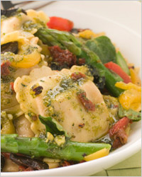
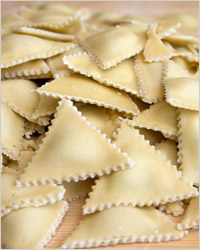
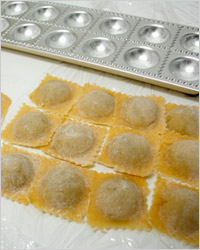
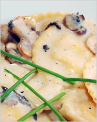
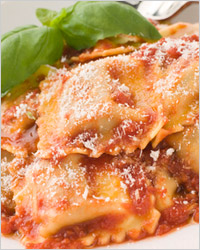
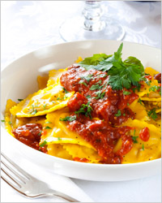
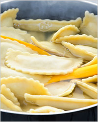
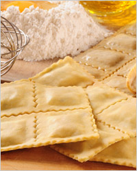
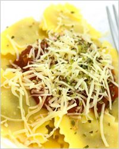
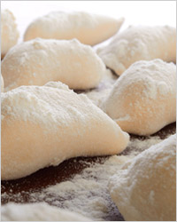

Что первым приходит на ум, когда до нашего слуха долетают слова «итальянская кухня»? Мы сразу вспоминаем пиццу, спагетти, ризотто, равиоли и несколько знаменитых соусов. Эта страна веками вдохновляла на творчество многих великих людей, и сегодня в Италии черпают вдохновение художники, архитекторы, модельеры и, конечно кулинары, ведь кулинария в этой стране возведена в ранг искусства. Даже люди, весьма далекие от кухни, не останутся равнодушными, попробовав хотя бы малую часть из богатого набора блюд, наполненных пряными ароматами трав и свежестью искусно приготовленных овощей. Из всего разнообразия солнечной, пленительной и роскошной кухни темпераментной Италии мы выбрали равиоли – блюдо, популярное в каждом регионе этой станы.Италия от нас далеко, почему же такой интерес именно к равиоли? Дело в том, что тот или иной вариант этого блюда пробовал каждый. Наверняка вы уже готовили пасту, пельмени и вареники со множеством вкусных начинок, а теперь попробуйте приготовить равиоли. Одни называют их итальянскими пельменями, другие считают, что они похожи на вареники, а третьи уверены, что это одна из разновидностей пасты. Все эти мнения сходятся в том, что равиоли - это блюдо из тонкого теста с самыми разнообразными начинками. В качестве начинки может быть все, что угодно – мясо, морепродукты, сливочный сыр или овощи. Из основного блюда равиоли легко превращаются во вкуснейший десерт, стоит только сделать

сладкую начинку из фруктов, ягод или шоколада.Тот или иной вариант начинки, обернутой тестом, встречается в рецептах многих кухонь мира, откуда же итальянцы узнали о равиоли? По одной из версий, это национальное итальянское блюдо родом из Китая. Рецепт приготовления равиоли стал известен итальянцам благодаря их соотечественнику, путешественнику Марко Поло, который некоторое время жил в Китае, посещал его провинции и пробовал различные блюда местной кухни. Провинция Сычуань запомнилась путешественнику благодаря блюду под названием хунтун, рецепт которого он и привез на родину. Неизвестно, кто именно переименовал хунтун в равиоли, но у итальянцев это блюдо прижилось именно с таким названием и теперь признано одним из любимых национальных блюд.

Чем равиоли отличается от привычных нам вареников ипельменей? В первую очередь, формой. Равиоли лепят в форме квадратных подушечек, в виде полумесяцев, треугольничков и кружочков. Отличаются они и способом приготовления и подачи. Так, равиоли нельзя приготовить впрок, это блюдо, которое необходимо есть сразу после того, как его приготовили. Дело в том, что отличительной чертой итальянской кухни можно назвать свежесть, поэтому и для приготовления равиоли используются самые свежие продукты, которые нужно успевать съесть побыстрее. А приготовить равиоли можно, сварив их, поджарив на сковороде или во фритюре. Отварные равиоли можно использовать как самостоятельное блюдо, подав к ним маслины или какой-нибудь острый соус. Жареные или приготовленные во фритюре равиоли подают к протертым супам и бульонам, внимательно следя за тем, чтобы вкус их начинки дополнял и соответствовал основному блюду.Если вы решили приготовить равиоли, то начать следует с теста, потому что только из свежего теста получаются самые вкусные равиоли. Подготовьте кухню, потому что в помещении, где готовят равиоли, должно быть прохладно, вымойте руки в холодной воде и начинайте готовить. Просейте 200 граммов муки из твердых сортов пшеницы в глубокую миску, руками сделайте углубление в центре, разбейте туда два яйца, добавьте 1 столовую ложку оливкового масла и немного соли. Слегка взбейте яйца и начинайте перемешивать их с мукой до тех пор, пока у вас не получится однородная масса. Выложите получившуюся массу на большую разделочную доску, присыпанную мукой, и начинайте вымешивать тесто в течение 10-15 минут. Вообще, чтобы получилось хорошее тесто, необходимо обладать хорошей физической силой, поэтому лучше поручить это ответственное занятие сильным мира сего, т.е. мужчинам. Когда тесто будет готово, заверните его в пленку и оставьте в холодильнике минут на 20. Это время уйдет на то, чтобы приготовить самую вкусную начинку.
Начинку можно приготовить ту, которая вам больше нравится, например, из рикотты и шампиньонов, из шпината и творога, из курицы с сельдереем или из ягод с апельсином и корицей.
Начинка из рикотты и шампиньонов

Ингредиенты:
250 гр. свежих шампиньонов,
250 гр. рикотты,
1 ст.л. пармезана,
1 ст.л. мелко рубленой петрушки,
1 зубчик чеснока,
оливковое масло,
соль,
перец.
Приготовление:
Шампиньоны промойте, обсушите и мелко нарежьте. Очистите и измельчите
зубчик чеснока. На сковороде разогрейте немного оливкового масла и
обжарьте в нем грибы, добавьтечеснок, соль и перец. Обжаривайте в
течение пары минут, после чего остудите.

Рикотту взбейте до кремообразного состояния, добавьте тертый пармезан и петрушку, тщательно перемешайте и соедините получившуюся смесь с грибами.Начинка из шпината и творога
Ингредиенты:
500 гр. шпината,
100 гр. творога,
75 гр. полутвердого сыра,
соль,
перец.
Приготовление:
Поставьте на огонь кастрюлю с чистой подсоленной водой. Шпинат промойте в
проточной воде и нарежьте, после чего припустите в кипящей воде в
течение 2 минут и откиньте на

дуршлаг. Натрите сыр на мелкой терке и смешайте его с творогом, добавьте к этой смести шпинат, соль, перец и тщательно перемешайте.Начинка из курицы с сельдереем
Ингредиенты:
800 гр. куриного филе,
300 гр. черешкового сельдерея,
50 мл. сливок,
перец,
соль.
Приготовление:
Куриное филе нарежьте небольшими кусочками и измельчите в блендере. Сельдерей

тщательно промойте, обрежьте с двух сторон и также измельчите в блендере. Смешайте филе и сельдерей, добавьте сливки, посолите, поперчите и перемешайте.Начинка из ягод с апельсином и корицей
Ингредиенты:
80 гр. смородины,
80 гр. черники,
80 гр. виктории,
1 апельсин,
1 ч.л. корицы.
Приготовление:
Апельсин очистите, разберите на дольки и удалите все пленки, оставшуюся мякоть мелко

нарежьте. Ягоды промойте и обсушите, выложите в миску и разомните вилкой, добавьте к ним мякоть апельсина и чайную ложку корицы, тщательно перемешайте.Когда начинка готова, можно доставать тесто из холодильника. Теперь вам пригодится лапшерезка, если такого агрегата нет в вашем кухонном арсенале, то запаситесь скалкой, мукой и терпением. Разделите тесто на две равные части, посыпьте рабочую поверхность мукой, вооружитесь скалкой и начинайте раскатывать. Пласт теста должен получиться очень тонким и по возможности квадратным или прямоугольным. Результатом ваших стараний должны стать два прямоугольника из тестатолщиной не более 1 мм, которые нужно оставить в покое минут на 10, прежде чем начинать раскладывать начинку. Теперь на один из слоев теста небольшими горками через равное расстояние, например, сантиметров 5, выложите начинку и накройте всё вторым пластом теста. В зависимости от того, какую форму равиоли вы хотите получить, разрежьте тесто ножом на квадраты или вырежьте с помощью стакана кружочки, защипните края и отварите в слегка подсоленной воде или обжарьте на растительном масле.

Несмотря на то, что равиоли считается итальянским блюдом, готовят его и во Франции в регионе Прованс. Прованские равиоли совершенно особенное блюдо. У привычных нам блюд зачастую встречаются альтернативные варианты приготовления, так можно встретить рецепты «ленивых» пельменей, вареников и даже голубцов. Тот вариант приготовления равиоли, который предлагает Прованс, тоже можно назвать «ленивым», потому что готовится это блюдо без теста.Прованские равиоли
Ингредиенты:
500 гр. мясного фарша,
1 большой пучок шпината,
50 гр. твердого сыра,
1 яйцо,
50 гр мелко рубленой петрушки,
2 зубчика чеснока,
мускатный орех,
перец,
соль.
Приготовление:

Вместо традиционной лепки пельменей в узком семейном кругу попробуйте приготовить равиоли – национальное блюдо ароматной итальянской кухни. Внесите немного разнообразия, разбавив привычный мясной фарш овощами, сыром и пряными травами. Проникнетесь итальянской идеей о том, что приготовление пищи – искусство, а каждый кулинар – талантливый творец, и у вас обязательно получатся самые вкусные, самые оригинальные и ароматные равиоли!
Алёна Карамзина